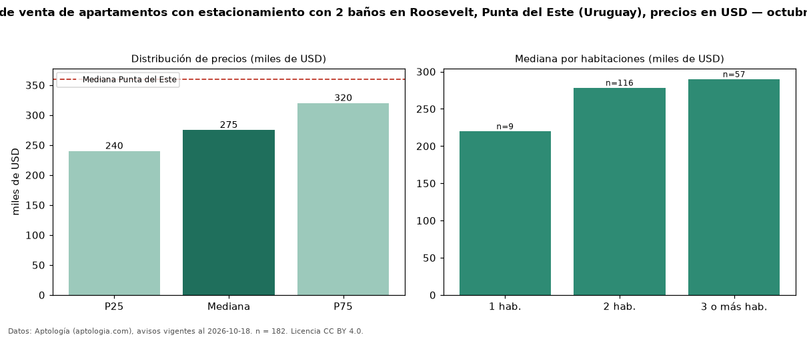

Precio de venta de apartamentos con estacionamiento con 2 baños en Roosevelt, Punta del Este (Uruguay), precios en USD — octubre 2026
Con 182 avisos vigentes, el precio mediano de apartamentos con estacionamiento con 2 baños en venta en Roosevelt, Punta del Este (Uruguay) es USD 275.000. Prácticamente coincide con la mediana de los apartamentos con estacionamiento en venta de Roosevelt (USD 270.000, n = 335); este segmento reúne el 54 % de esos avisos. Por metro cuadrado, la mediana es USD 3.179/m² (n = 166), 2 % por debajo de los apartamentos con estacionamiento en venta de Roosevelt (USD 3.236/m²). El área mediana anunciada es 85 m². El segmento con más oferta es el de 2 habitaciones (116 avisos, mediana USD 278.500); pasar de 1 habitación a 3 o más habitaciones cambia la mediana +32 %. La cuota de mantenimiento o condominio mediana declarada es USD 785 al mes (n = 28). La mediana de todos los apartamentos en venta de Punta del Este es USD 360.000 (−24 % de diferencia). La mitad central de los avisos va de USD 240.000 a USD 320.000 (razón 1,3), una dispersión baja. Datos: Aptología (aptologia.com), CC BY 4.0 — https://www.aptologia.com/uy/venta/punta-del-este/roosevelt. Archivos: PDF, CSV con las cifras y gráfica PNG.

| Avisos únicos | 182 |
|---|---|
| Percentil 25 | COP 240.000 |
| Mediana | COP 275.000 |
| Percentil 75 | COP 320.000 |
| Mediana por m² | COP 3.178 |
Fuente: avisos vigentes de portales inmobiliarios recopilados por Aptología, deduplicados (mínimo 30 avisos únicos por celda). Precios pedidos, no cerrados. Fecha: 2026-10-18.